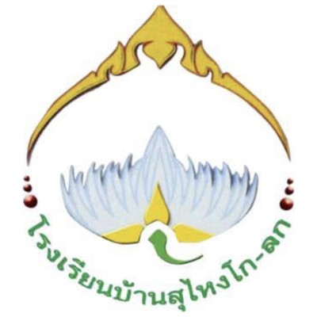
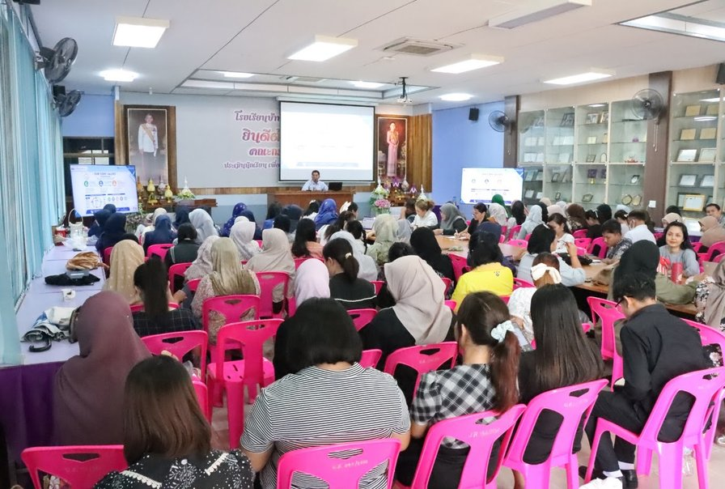
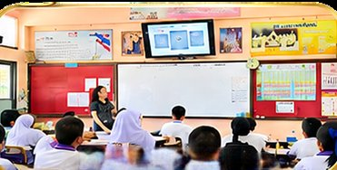
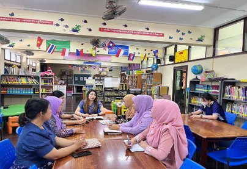
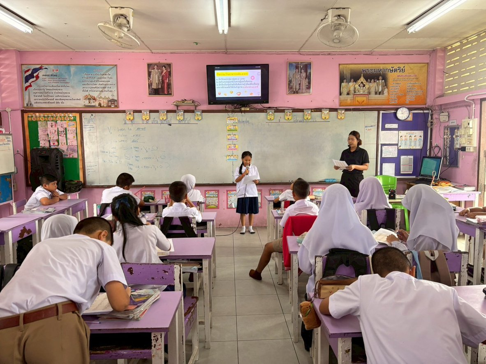
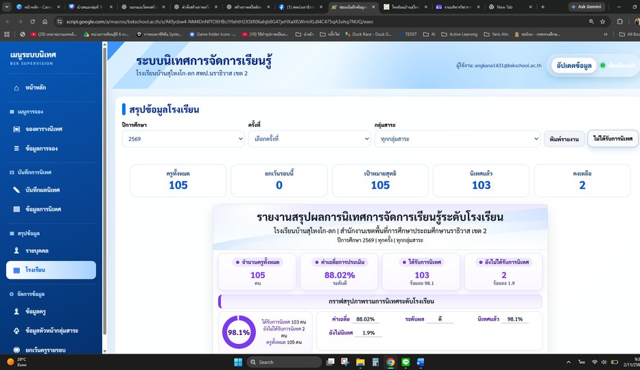

แนวคิด ทฤษฎี หลักการ และระบบการนิเทศการศึกษา
จากความสัมพันธ์เชิงวิชาชีพ สู่การพัฒนาครูและผู้เรียน
ED 518 การนิเทศการศึกษาและการพัฒนาหลักสูตร
หลักสูตรศึกษาศาสตรมหาบัณฑิต สาขาการบริหารการศึกษา
สถาบันรัชต์ภาคย์ กลุ่มที่ 1


§6.4 และ §4.2 (หน้า 15–16, 10–11)
นิเทศครบแล้ว...แต่ผู้เรียนพัฒนาขึ้นหรือยัง?
103/105 ครูได้รับการนิเทศ (98.1%) ตามรายงาน
ค่าเฉลี่ยประเมินการนิเทศ 88.02%
ไม่มีข้อมูลเพียงพอในเอกสารนี้ เพื่อสรุปว่าการอ่านของผู้เรียนดีขึ้น
Key messageความครอบคลุมของการนิเทศไม่ใช่หลักฐานตรงของผลการเรียนรู้
ผลลัพธ์ประจำบท หน้า 3
เส้นทางการเรียนรู้ 60 นาที
- ทฤษฎี
- ระบบ
- กรณีศึกษา
- ปัญหา
- PIDRE-D
- บทเรียนผู้บริหาร
และหลักฐานร่วมสมัย
โรงเรียนบ้านสุไหงโก-ลก
ช่องว่างเชิงระบบ
ข้อเสนอ PIDRE-D และแนวทางประเมิน
§1.1 หน้า 3
นิเทศการศึกษา: มากกว่าการตรวจแผน
Harris
กิจกรรมที่ส่งผลต่อการสอนและการเรียนรู้
Glickman & Gordon
พัฒนาความสามารถครูในการคิดและตัดสินใจ
สังเคราะห์
สังเกต สนทนา วิเคราะห์หลักฐาน ติดตามผล
Key messageการนิเทศเป็นการสนับสนุนทางวิชาชีพเพื่อพัฒนาการสอนและเงื่อนไขของสถานศึกษา
§1.2 ตาราง 1.1 หน้า 4
นิเทศพัฒนาอะไร? หลักฐาน 4 ระดับ
ครู
แผนที่ปรับและหลักฐานสะท้อนคิด
ผู้เรียน
ชิ้นงานและผลประเมินที่เหมาะสม
หลักสูตรและองค์กร
ความสอดคล้องและการใช้ข้อมูลร่วมกัน
Key messageผลการนิเทศต้องมองครู ผู้เรียน หลักสูตร และองค์กรร่วมกัน
§1.3 หน้า 4–5
นิเทศเพื่อพัฒนา ≠ ประเมินเพื่อการตัดสิน
นิเทศเพื่อพัฒนา
เปิดเผยปัญหา ทดลอง ปรับปรุง
ประเมินเพื่อการตัดสิน
รับรองมาตรฐาน/บริหารบุคลากร
ระบุวัตถุประสงค์ สิทธิการเข้าถึง และขอบเขตข้อมูลก่อนเสมอ
Key messageการใช้ข้อมูลร่วมกันโดยไร้ข้อตกลงลดความไว้วางใจ
§2.1 ตาราง 1.2 หน้า 5
จาก Inspection สู่ Collaborative Learning
- 1กำกับและตรวจสอบมาตรฐาน
- 2มนุษยสัมพันธ์และประชาธิปไตย
- 3นิเทศแบบคลินิก
- 4นิเทศแบบพัฒนาการและร่วมมือ
ข้อควรระวังรูปแบบนิเทศเป็นแนวโน้มที่อยู่ร่วมกัน ไม่ใช่ยุคที่ตัดขาด
§2.2–2.4 ตาราง 1.3 หน้า 5–7
ทฤษฎี 4 ฐานของการนิเทศ
Human Relations
ความไว้วางใจ
Systems Theory
เงื่อนไขและ feedback
Adult Learning
ประสบการณ์ครู
Reflective Practice
เหตุผลจากการปฏิบัติ
Key messageคน ระบบ การเรียนรู้ผู้ใหญ่ และการสะท้อนคิดต้องทำงานร่วมกัน
§2.2 หน้า 6
ความไว้วางใจคือเงื่อนไข ไม่ใช่การยกเว้นมาตรฐาน
- 1ข้อตกลงก่อนนิเทศ
- 2ภาษาไม่ตัดสินตัวบุคคล
- 3ปกป้องข้อมูลและยอมรับมุมมองครู
Key messageครูกล้าบอกปัญหาเมื่อรู้ว่าจะใช้ข้อมูลอย่างไร
§2.3 หน้า 6
มองการนิเทศเป็นระบบย่อยของโรงเรียน
Key messageการเพิ่มข้อเสนอแนะอาจไม่พอหากครูไม่มีเวลานำไปทดลอง
§2.4 หน้า 6
ครูคือผู้เรียนรู้ที่มีประสบการณ์
Knowles
ประสบการณ์และเป้าหมายที่สัมพันธ์กับงาน
Schön
reflection-in-action และ reflection-on-action
เริ่มจากคำถามและหลักฐานการสอน
Key messageนิเทศที่ดีเริ่มจากคำถามจริงของครู
§3.1 หน้า 7
Developmental Supervision: 3 วิธีนิเทศ
Directive
สาธิต/ชี้แนะชัดเจน
Collaborative
ร่วมคิดและตกลง
Nondirective
ครูวิเคราะห์และวางแผนตนเอง
Key messageเลือกวิธีชี้แนะ ร่วมมือ หรือไม่ชี้นำตามความพร้อมของงาน
Developmental Supervision
ครูคนเดียวกันอาจต้องการหลายวิธี
- ครูชำนาญการจัดชั้นเรียนแต่ขอคำแนะนำด้านการประเมินได้
- เลือกวิธีตามทักษะ/เป้าหมาย
- ปรับวิธีเมื่อหลักฐานความพร้อมเปลี่ยน
ครูคนเดียวกัน
เลือกวิธีตามงานที่ต้องพัฒนา ไม่ใช่ตามตัวบุคคล
Key messageการจัดระดับไม่ควรกลายเป็นป้ ายถาวร
§3.2 ตาราง 1.4 หน้า 8
Clinical Supervision: วงจร 5 ขั้น
Key messageการนิเทศต้องมีข้อตกลงก่อนสังเกตและการสะท้อนผลจากหลักฐาน
§3.2 หน้า 8
สังเกตข้อเท็จจริงก่อนสรุปความเห็น
สิ่งที่ตรวจสอบได้
“ครูถามปลายเปิด 3 ครั้ง ผู้เรียนตอบ 2 คน”
สิ่งที่ต้องหลีกเลี่ยง
ฟันธงว่าไม่มีส่วนร่วมทันที
ชวนครูตีความหลักฐานร่วมกัน
Key messageบันทึกเชิงพรรณนาเพิ่มคุณภาพการสนทนาหลังสังเกต
§3.3 หน้า 8
Coaching และ Mentoring: เหมือนกันแค่ไหน?
- 1สังเกต
- 2สาธิต
- 3ฝึก
- 4Feedback
Coaching
เฉพาะประเด็นและต่อเนื่อง
Mentoring
ช่วยพัฒนาวิชาชีพ/การปรับตัว
Key messageการโค้ชเน้นเป้ าหมายการสอนเฉพาะ ส่วนพี่เลี้ยงครอบคลุมการเติบโตวิชาชีพมากกว่า
§3.3, §5.1 หน้า 8, 12
หลักฐานจากงานวิจัย Coaching
ด้านการสอน
ผลผู้เรียน
- Kraft et al. 2018: 60 การศึกษาเชิงเหตุผล
- ผลโครงการขนาดใหญ่มีแนวโน้มลดลง
- SD คือขนาดอิทธิพล ไม่ใช่เปอร์เซ็นต์
ข้อควรระวังผลเฉลี่ยจากการวิจัยต้นทางไม่ใช่คำรับประกันของทุกโรงเรียน
§3.4 หน้า 8–9
การนิเทศแบบร่วมพัฒนาและ PLC
PLC
ร่วมรับผิดชอบการเรียนรู้ของผู้เรียน
การนิเทศ
ยังต้องมีเป้าหมายเครื่องมือและการติดตาม
Key messagePLC สนับสนุนงานนิเทศ แต่ไม่ใช่คำเดียวกัน
§3.4 หน้า 9
Lesson Study: ห้องเรียนคือพื้นที่เรียนรู้ร่วม
- 1ร่วมกำหนดโจทย์
- 2ออกแบบบทเรียน
- 3เปิดชั้นเรียนสังเกต
- 4วิเคราะห์และปรับ
หลักฐาน Lewis & Perry; Inprasitha
Key messageหลักฐานจากการเปิดชั้นเรียนต้องมุ่งพฤติกรรมผู้เรียน
§3.5 ตาราง 1.5 หน้า 9
เลือกวิธีนิเทศตามลักษณะปัญหา
| ลักษณะปัญหา | วิธีที่เหมาะ | |
|---|---|---|
| ต้องการตัวอย่าง | → | Coaching/สาธิต |
| วิเคราะห์ร่วม | → | Collaborative/Lesson Study |
| วิเคราะห์ตนเอง | → | Video Reflection |
| ปัญหาซ้ำหลายห้อง | → | PLC + ระบบ |
Key messageไม่มีวิธีเดียวที่เหมาะกับครูทุกคน
§4.1 หน้า 9–10
หลักการสำคัญ 6 มิติ
เคารพศักดิ์ศรีครู
ร่วมกำหนดเป้าหมาย
เป็นระบบ
ต่อเนื่อง
ข้อมูลตรวจสอบได้
มุ่งผลผู้เรียน
Key messageมาตรฐานต้องคู่กับการมีส่วนร่วมและหลักฐาน
§4.2 ตาราง 1.6 หน้า 10
Input → Process → Output → Outcome → Feedback
Key messageแยกผลผลิตออกจากผลลัพธ์ เพื่อไม่ตีความความสำเร็จเกินข้อมูล
§4.3 หน้า 10–11
PIDRE: วงจร 5 ขั้นที่ไม่จบเมื่อเยี่ยมชั้นเรียน
Key messagePlanning, Informing, Doing, Reinforcing และ Evaluating ต้องมีคุณภาพทุกขั้น
§4.4 หน้า 11
โครงสร้างบทบาทและความขัดแย้งของหน้าที่ซ้อน
ประเมินตามระเบียบต้องคำนึงกฎหมายที่บังคับ
Key messageผู้บริหารต้องจัดกติกาและคุ้มครองข้อมูลอย่างถูกต้อง
§4.5 หน้า 11
จากหลักฐานชั้นเรียนสู่การปรับหลักสูตร
Key messageการนิเทศและหลักสูตรเป็นวงจรพัฒนาเดียวกัน
§5.1 หน้า 12
EEF: พัฒนาวิชาชีพที่เปลี่ยนการปฏิบัติ
- 1ตั้งเป้าหมาย
- 2ทบทวนความรู้เดิม
- 3ข้อมูลย้อนกลับ
- 4วางแผนและทดลองใช้
- 5คุณภาพโค้ชและเวลาต่อเนื่อง
Key messageอบรมครั้งเดียวไม่เพียงพอหากไม่มีการทดลองและติดตาม
§5.2 หน้า 12
TALIS 2024: ร่วมสังเกตชั้นเรียนบ่อยแค่ไหน?
OECD (2025) รายงานโดยเฉลี่ยราว 9% ของครูในระบบที่เข้าร่วม สังเกตเพื่อนและให้ Feedback อย่างน้อยเดือนละครั้ง
- ไม่ใช่ตัวเลขเฉพาะประเทศไทย
- ไม่ยืนยันเหตุ–ผล
ข้อควรระวังการร่วมเรียนรู้ต้องอาศัยเวลาและระบบรองรับ
§5.3 หน้า 12–13
Feedback ที่มีคุณภาพและหลักฐานผู้เรียน
ข้อเสนอแนะกว้าง ๆ
“สอนดี”
ข้อเสนอแนะเชิงหลักฐาน
- อิงพฤติกรรมสังเกตได้
- เชื่อมชิ้นงาน/คำอธิบายของผู้เรียน
การวัดก่อน–หลังต้องพิจารณาความเทียบเคียงและปัจจัยอื่น
Key messageข้อเสนอแนะต้องบอกครูว่าจะทดลองปรับอะไรต่อไป
§5.4 หน้า 13
UDL 3.0: นิเทศเพื่อโอกาสเรียนรู้ที่เป็นธรรม
- CAST (2024): Universal Design for Learning 3.0
- ผู้เรียนต่างพื้นฐานภาษาและความต้องการ
- ไม่ลดเป้าหมายโดยไม่มีเหตุผลวิชาการ
การเข้าถึง
การมีส่วนร่วม
การแสดงความเข้าใจ
Key messageต้องตรวจอุปสรรคต่อการเข้าถึง การมีส่วนร่วม และการแสดงความเข้าใจ
§5.5 หน้า 13
Video และ AI: หลักฐานใหม่ ความรับผิดชอบใหม่
Key messageเทคโนโลยีช่วยตรวจข้อมูล ไม่ควรตัดสินคุณภาพครูโดยลำพัง

Case Study · §6.1 หน้า 14
กรณีศึกษา: โรงเรียนบ้านสุไหงโก-ลก
นักเรียนรวม (ก่อนประถม 340 · ประถม 1,241 คน)
ครูและบุคลากร คน
ผู้เรียนความต้องการจำเป็นพิเศษ ป.3–6
Key messageโรงเรียนขนาดใหญ่และการศึกษาเรียนรวมเป็นบริบทสำคัญของระบบนิเทศ
Case Study · §6.1 หน้า 14
โครงสร้างผู้รับผิดชอบนิเทศภายใน

Key messageระบบมีฝ่ ายวิชาการเป็นแกนและผู้ร่วมดำเนินงานหลายบทบาท
Case Study · §6.2 ตาราง 1.8 หน้า 14–15
หกขั้นตอนของระบบนิเทศโรงเรียน
- 1เตรียมประชุม
- 2วิเคราะห์ผู้เรียน
- 3เยี่ยมชั้นเรียน
- 4บันทึกออนไลน์
- 5ครูปรับการสอน
- 6PLC


Key messageเชื่อมการวิเคราะห์ผู้เรียนก่อนสังเกตกับการพัฒนาและ PLC
Case Study · §6.3 หน้า 15
กรณี อ่านจับใจความ ป.6: โจทย์การนิเทศ

ระบุใจความสำคัญ
แยกประเด็นสำคัญ
สรุปด้วยภาษาตนเอง
ใช้เหตุผลและหลักฐานจากข้อความ
Key messageความท้าทายคือการสรุปใจความและใช้หลักฐานจากข้อความ
Case Study · §6.3 หน้า 15
แนวทางสนับสนุนการสอนอ่าน
- 10–15 นาทีอ่าน
- 5W1H เกม Mind Map Active Learning
- Coaching
- วัดก่อน–หลัง ชิ้นงานและพฤติกรรม
เป็นแนวทางที่ระบุ ไม่ใช่ผลสำเร็จที่ยืนยัน
Key messageกิจกรรมการอ่านและเครื่องมือประเมินต้องตอบทักษะเดียวกัน
Case Study · โรงเรียนบ้านสุไหงโก-ลก
ข้อมูลที่รายงาน vs สิ่งที่ยังสรุปไม่ได้
103 คนได้รับการนิเทศ = 98.1%
คะแนนเฉลี่ยการนิเทศ 88.02% อยู่ระดับดี

ผลการอ่านก่อน–หลังยังไม่แสดงในเอกสารให้สรุปผลเชิงเหตุผล
Key message103/105 และ 88.02% ยังไม่ตอบว่าผู้เรียนอ่านดีขึ้นหรือไม่
Case Study · §6.2 หน้า 14–15
เทียบกระบวนการโรงเรียนกับ PIDRE
| PIDRE | กระบวนการของโรงเรียน | สถานะหลักฐานในรายงาน |
|---|---|---|
| P–I | ขั้นเตรียม/วิเคราะห์สัมพันธ์ P–I | พบในรายงาน |
| D | เยี่ยม/บันทึกสัมพันธ์ D | พบในรายงาน |
| R/E | การพัฒนาและ PLC อาจรองรับ R/E | อาจรองรับ |
| R · ผลผู้เรียน | ยังไม่ปรากฏหลักฐาน R และผลผู้เรียนชัดเป็นส่วนแยก | ยังไม่ปรากฏหลักฐาน |
ข้อควรระวังการไม่พบหลักฐานในรายงานไม่เท่ากับโรงเรียนไม่ได้ทำ
§7.1 หน้า 16
งานนิเทศครบ แต่เวลาติดตามอาจไม่พอ
นิเทศครบตามแผน
98.1%
- ภาระสอนของครู
- เวลาก่อน/หลังสังเกต
- ความต่อเนื่องของ Feedback
- จุดตรวจที่สำคัญ
Key messageความถี่การสังเกตต้องพิจารณาควบคู่คุณภาพการสะท้อนและการติดตาม
§7.2 หน้า 16–17
ความไว้วางใจและบทบาทผู้นิเทศ
เปิดทางให้ครูร่วมตั้งประเด็น
ระบุสิทธิใช้ข้อมูล
ให้ข้อเสนอแนะบนหลักฐาน
รับฟังคำร้อง/ขอทบทวน
Key messageคำว่า “นิเทศเพื่อพัฒนา” ต้องสอดคล้องกับพฤติกรรมและกติกาข้อมูล
§7.3 หน้า 17
ใช้วิธีเดียวกับครูทุกคนได้หรือไม่?
เครื่องมือร่วมรักษามาตรฐาน
วิธีช่วยเหลือควรต่างตามความต้องการ
ปรับระดับได้และไม่เผยแพร่รายชื่อ
หลีกเลี่ยงป้ ายถาวร
Key messageความแตกต่างของงานไม่ควรกลายเป็นการจัดชั้นคุณค่าของครู
§7.4 หน้า 17
ช่องว่างหลักฐาน: Output ≠ Learner Outcome
ข้อจำกัดเหตุ–ผลจากแบบก่อน–หลังเพียงอย่างเดียว
Key messageข้อมูลการดำเนินงานต้องเชื่อมหลักฐานการสอนและผลผู้เรียนหลายช่วง
§7 ตาราง 1.9 หน้า 16–18
สังเคราะห์ปัญหาเป็นโจทย์บริหาร 5 ด้าน
เวลาและภาระงาน
ความไว้วางใจ
ความเหมาะสมของวิธี
ผลผู้เรียน
เทคโนโลยีและความปลอดภัยข้อมูล
Key messageสิ่งที่ต้องพัฒนาไม่ใช่แค่เพิ่มจำนวนครั้งนิเทศ
§8 และ §8.1 หน้า 18
PIDRE-D คืออะไร และยังไม่ใช่อะไร?
PIDRE มี 5 ขั้นตามเดิม
D หมายถึงเลือกวิธีนิเทศตามความต้องการ
เป็นกรอบข้อเสนอของกลุ่มเพื่อทดลองใช้
Key messageD = Differentiation ไม่ใช่ขั้นที่หกและยังไม่มีผลทดลองรับรองทั้งระบบ
§8.1 หน้า 18
สามฐานคิดของ PIDRE-D
ต่อเนื่อง P–E
เลือกช่วยเหลือตามปัญหาเฉพาะ
ติดตามการสอนและผลผู้เรียน ไม่หยุดที่รอบนิเทศ
§8.2 ตาราง 1.10 หน้า 18–19
P และ I: เริ่มจากเป้าหมายและข้อตกลง
- ข้อมูลพื้นฐาน
- ประเมินตนเอง
- เป้าหมาย
วิธีเก็บข้อมูลและสิทธิการเข้าถึง
กำหนดความคาดหวังร่วมกัน
Key messageวิเคราะห์ความต้องการครูและทำข้อตกลงเรื่องข้อมูลก่อนนิเทศ
PIDRE-D · D = Differentiation
D: Coaching, Lesson Study หรือ Video Reflection
Coaching
เมื่อครูต้องการตัวอย่าง
Lesson Study
เมื่อพร้อมร่วมคิด
Video Reflection
เมื่อครูสะท้อนตนเองได้
Key messageเส้นทางต่างกันได้ และครูคนเดียวอาจใช้มากกว่าหนึ่งวิธี
§8.2 ตาราง 1.10 หน้า 18–19
R และ E: ปิดวงจรด้วยการเปลี่ยนแปลง
Feedback เฉพาะเจาะจงและสนับสนุนงาน
ตรวจการปรับสอนและผลผู้เรียน
Key messageข้อเสนอแนะต้องพาไปทดลอง และประเมินทั้งครู ผู้เรียน ระบบ
§8.3 หน้า 19
ทดลองใช้หนึ่งภาคเรียนอย่างเป็นขั้นตอน
- 1สำรวจข้อมูลและตั้งเป้า
- 2เตรียมทักษะผู้นิเทศและกติกาข้อมูล
- 3โค้ช/ทำ Lesson Study ตามความพร้อม
- 4ติดตามตลอดภาคเรียน
ระยะดำเนินงาน ไม่กำหนดสัปดาห์ตายตัว
Key messageเอกสารใหม่เสนอระยะดำเนินงาน ไม่ล็อกสัปดาห์ตายตัว
§8.4 หน้า 19
เครื่องมือที่จำเป็นและคุณภาพการวัด
สำรวจความต้องการ
แบบสังเกตพฤติกรรม/ผลผู้เรียน
บันทึกสะท้อนและแผนทดลอง
เครื่องมือติดตามผู้เรียน
ทดสอบใช้จริงและความสอดคล้องผู้ประเมิน
Key messageIOC เป็นเพียงส่วนหนึ่งของการตรวจความตรง ไม่ใช่รับประกันความเที่ยง
Indicators · ตาราง 1.11
ตัวบ่งชี้ PIDRE-D 5 มิติ
Coverage
ความครอบคลุม
ครูได้รับการนิเทศตามแผนกี่รายและครบวงจรหรือไม่
ข้อจำกัดในการตีความจำนวนครั้งไม่แทนคุณภาพ
Implementation of Feedback
การใช้ข้อมูลย้อนกลับ
มีหลักฐานว่าครูปรับการสอนตามข้อค้นพบหรือไม่
ข้อจำกัดในการตีความต้องตรวจพฤติกรรมการสอนจริง
Trust/Fairness
คุณภาพความสัมพันธ์
ครูรู้สึกว่าการนิเทศปลอดภัยและเป็นธรรมเพียงใด
ข้อจำกัดในการตีความไม่ใช้คะแนนความพึงพอใจแทนผลเรียนรู้
Learner Learning
การเรียนรู้ผู้เรียน
ผลตามเป้าหมายหลายช่วงเปลี่ยนอย่างไร
ข้อจำกัดในการตีความไม่สรุปเหตุ–ผลจากก่อนหลังเพียงอย่างเดียว
Feasibility
ความเป็นไปได้
ภาระงาน เวลา และความเสี่ยงข้อมูลอยู่ในระดับรับได้หรือไม่
ข้อจำกัดในการตีความต้องฟังเสียงครูและผู้เกี่ยวข้อง
ข้อควรระวังเป้า 95% และ 70% จากรายงานเก่าเป็นเพียงตัวอย่าง ไม่ใช่มาตรฐานใหม่
§8.6 หน้า 20
ความเสี่ยง: ครู ข้อมูลวิดีโอ และ AI
ลดการตีตรา
ระบุฐานกฎหมายและสิทธิการเข้าถึง
กำหนดการเก็บ/ลบวิดีโอ
ไม่เผยข้อมูลระบุตัวผู้เรียน
Human oversight ต่อ AI
Key messageคุ้มครองข้อมูลไม่ใช่เพียงขอความยินยอมแบบกว้าง ๆ
§8.6 หน้า 20–21
ขยายผลอย่างไร: Explore–Prepare–Deliver–Sustain
- 1Exploreตรวจบริบทและความพร้อม
- 2Prepareเตรียมผู้เกี่ยวข้อง
- 3Deliverส่งเสริมระหว่างทดลอง
- 4Sustainทบทวนและยั่งยืน
พิจารณาผลผู้เรียน ภาระงาน ความเสี่ยง และผลกระทบไม่ตั้งใจ
Key messageไม่ตัดสินขยายผลด้วยจำนวนเป้ าหมายที่ผ่านอย่างเดียว
§9 หน้า 21
ผู้บริหารสร้างเงื่อนไขของโรงเรียนที่เรียนรู้ร่วมกัน
ครูเปิดเผยปัญหาได้
สนทนาบนข้อมูล
เวลา/ทรัพยากร/หลักสูตร
Key message3 ฐานของความสำเร็จคือความไว้วางใจ หลักฐาน และการตัดสินใจเชิงบริหาร
Act VI · ตอบคำถามเปิดเรื่อง
นิเทศครบแล้ว พอหรือยัง?
การนิเทศมีคุณค่าเมื่อมีหลักฐานว่าครูและผู้เรียนได้เรียนรู้อะไร
กลุ่มที่ 1 · ขอบคุณ
ขอบคุณและทีมผู้จัดทำ
ภาคผนวก · แยกจากเวลานำเสนอ 60 นาที
คำถามอภิปราย
- 1
จะรักษาสมดุลระหว่างหน้าที่ช่วยเหลือครูกับหน้าที่ประเมินตามระเบียบได้อย่างไร โดยไม่สร้างคำมั่นเรื่องข้อมูลเกินขอบเขตกฎหมาย?
- 2
หากต้องลดภาระงานนิเทศ ท่านจะลดจำนวนรอบหรือเปลี่ยนคุณภาพการติดตามอย่างไร และใช้หลักฐานใดตัดสิน?
- 3
ครูคนเดียวต้องการ Coaching ด้านการประเมินและ Lesson Study ด้านการอ่านพร้อมกัน จะจัดระบบช่วยเหลืออย่างไร?
- 4
เมื่อโรงเรียนมีอัตราการนิเทศสูง แต่ยังไม่มีผลการอ่านเพียงพอ ท่านจะออกแบบหลักฐานผู้เรียนอย่างไรโดยไม่สรุปเหตุ–ผลเกินข้อมูล?
- 5
หากใช้วิดีโอและ AI ช่วยนิเทศ ท่านจะกำหนดสิทธิ การเก็บรักษา และการตัดสินใจโดยมนุษย์อย่างไร?
แนวทางเวลาเปิดประเด็น 3 นาที • อภิปรายร่วม 22 นาที • สังเคราะห์ปิด 5 นาที (เป็นข้อเสนอสำหรับการจัดกิจกรรม ไม่ใช่ข้อมูลจากเอกสารหลัก)
ภาคผนวก · เอกสารบทที่ 1 ฉบับอาจารย์แก้
เอกสารอ้างอิง (1/2)
ดวงทิพย์ เพ็ชรนิล, วรรณรี ปานศิริ, และทัศนีย์ ช่อเทียนทิพย์. (2568). กระบวนการนิเทศและเทคนิคการนิเทศทางการศึกษาเพื่อพัฒนาคุณภาพการศึกษา. วารสารวิจัยวิชาการ, 8(3), 395–408.
ธมลวรรณ พูนวัฒนานุกูล และบรรจบ บุญจันทร์. (2568). แนวทางพัฒนาการดำเนินการนิเทศภายในของสถานศึกษา สังกัดสำนักงานเขตพื้นที่การศึกษาประถมศึกษานครราชสีมา เขต 3. วารสารเสียงธรรมจากมหายาน, 11(2), 290–305.
ภัณฑิรา สุปการ. (2557). รูปแบบการบริหารจัดการการนิเทศการศึกษาสำหรับศตวรรษที่ 21 [วิทยานิพนธ์ปริญญาปรัชญาดุษฎีบัณฑิต, มหาวิทยาลัยศิลปากร].
ยุภารัตน์ หาสุข, อรรถพร วรรณทอง, และไพรวัลย์ โคตรตะ. (2568). ความสัมพันธ์ระหว่างทักษะการนิเทศของผู้บริหารสถานศึกษาในยุคดิจิทัลกับพฤติกรรมการสอนของครู สังกัดสำนักงานเขตพื้นที่การศึกษามัธยมศึกษาอุบลราชธานี อำนาจเจริญ. วารสารการบริหารและนิเทศการศึกษา, 16(2), 218–238.
สามารถ ทิมนาค. (2554). การพัฒนารูปแบบการนิเทศการสอนตามแนวคิดของกลิ๊กแมน เพื่อพัฒนาสมรรถภาพการจัดการเรียนรู้ด้านทักษะการอ่านของครูภาษาไทย. Veridian E-Journal, Silpakorn University, 4(1), 491–512.
สุชัญญา ลือชา, สุนิสา วงศ์อารีย์, และจิรันธนิน ทองธิราช. (2569). แนวทางการนิเทศการศึกษาแบบร่วมพัฒนาวิชาชีพของผู้บริหารศูนย์การศึกษาพิเศษ กลุ่มเครือข่ายฯ ศูนย์การศึกษาพิเศษเขตการศึกษา 9. วารสารครุศาสตร์ปัญญา, 5(4), 200–218.
อภิชาติ เนินพรหม. (2566). การพัฒนากระบวนการนิเทศผสมผสานแบบร่วมพัฒนาเพื่อเสริมสร้างสมรรถนะการจัดการเรียนรู้สำหรับครูผู้สอนอาชีวศึกษา สถานศึกษาประเภทวิทยาลัยการอาชีพ ในพื้นที่ภาคใต้. วารสารวิชาการนวัตกรรมและเทคโนโลยี สถาบันการอาชีวศึกษาภาคใต้ 1, 8(1), 13–22.
อลงกรณ์ สุขวัน, ไชยวัฒน์ ชุ่มนาเสียว, ศรีสมพร โคตะคำ, จารุกิตติ์ สายสิงห์, อธิศ ไชยคิรินทร์, ยุทธศาสตร์ กงเพชร, และชาติชาย เกตุพรม. (2567). การพัฒนาภาวะผู้นำทางการนิเทศภายในสถานศึกษาด้วยกระบวนการนิเทศแบบ PIDRE ร่วมกับเทคนิคการสังเกตการสอนเชิงรุกในชั้นเรียนเพื่อเสริมสร้างสมรรถนะการชี้แนะสะท้อนคิดผู้นิเทศ. Journal of Modern Learning Development, 9(2), 380–394.
Allen, J., Pianta, R., Gregory, A., Mikami, A., & Lun, J. (2011). An interaction-based approach to enhancing secondary school instruction and student achievement. Science, 333(6045), 1034–1037.
Burton, W. H., & Brueckner, L. J. (1955). Supervision: A social process (3rd ed.). Appleton-Century-Crofts.
CAST. (2024). CAST universal design for learning guidelines version 3.0. https://udlguidelines.cast.org/
Cogan, M. L. (1973). Clinical supervision. Houghton Mifflin.
DuFour, R. (2004). What is a “professional learning community”? Educational Leadership, 61(8), 6–11.
Education Endowment Foundation. (2021a). Effective professional development. https://educationendowmentfoundation.org.uk/education-evidence/guidance-reports/effective-professional-development
Education Endowment Foundation. (2021b). Teacher feedback to improve pupil learning. https://educationendowmentfoundation.org.uk/education-evidence/guidance-reports/feedback
Education Endowment Foundation. (2024). A school’s guide to implementation (3rd ed.). https://educationendowmentfoundation.org.uk/education-evidence/guidance-reports/implementation
Glickman, C. D., & Gordon, S. P. (1987). Clarifying developmental supervision. Educational Leadership, 44(8), 64–68.
Glickman, C. D., Gordon, S. P., & Ross-Gordon, J. M. (2009). The basic guide to SuperVision and instructional leadership (2nd ed.). Pearson/Allyn & Bacon.
Glickman, C. D., Gordon, S. P., & Ross-Gordon, J. M. (2018). SuperVision and instructional leadership: A developmental approach (10th ed.). Pearson.
Goldhammer, R. (1969). Clinical supervision: Special methods for the supervision of teachers. Holt, Rinehart and Winston.
Harris, B. M. (1985). Supervisory behavior in education (3rd ed.). Prentice-Hall.
ภาคผนวก · เอกสารบทที่ 1 ฉบับอาจารย์แก้
เอกสารอ้างอิง (2/2)
Hoy, W. K., & Miskel, C. G. (2013). Educational administration: Theory, research, and practice (9th ed.). McGraw-Hill.
Inprasitha, M. (2022). Lesson study and open approach development in Thailand: A longitudinal study. International Journal for Lesson and Learning Studies, 11(5), 1–15. https://doi.org/10.1108/IJLLS-04-2021-0029
Knowles, M. S. (1980). The modern practice of adult education: From pedagogy to andragogy (Rev. and updated ed.). Cambridge Adult Education.
Kraft, M. A., Blazar, D., & Hogan, D. (2018). The effect of teacher coaching on instruction and achievement: A meta-analysis of the causal evidence. Review of Educational Research, 88(4), 547–588. https://doi.org/10.3102/0034654318759268
Lewis, C., & Perry, R. (2017). Lesson study to scale up research-based knowledge: A randomized, controlled trial of fractions learning. Journal for Research in Mathematics Education, 48(3), 261–299.
Miao, F., & Cukurova, M. (2024). AI competency framework for teachers. UNESCO. https://www.unesco.org/en/articles/ai-competency-framework-teachers
Miao, F., & Holmes, W. (2023). Guidance for generative AI in education and research. UNESCO. https://www.unesco.org/en/articles/guidance-generative-ai-education-and-research
OECD. (2025). Results from TALIS 2024: The state of teaching. https://doi.org/10.1787/90df6235-en
Schön, D. A. (1983). The reflective practitioner: How professionals think in action. Basic Books.
Sergiovanni, T. J. (1967). Factors which affect satisfaction and dissatisfaction of teachers. Journal of Educational Administration, 5(1), 66–82. https://doi.org/10.1108/eb009610
Sergiovanni, T. J., & Starratt, R. J. (1998). Supervision: A redefinition (6th ed.). McGraw-Hill.
von Bertalanffy, L. (1968). General system theory: Foundations, development, applications. George Braziller.